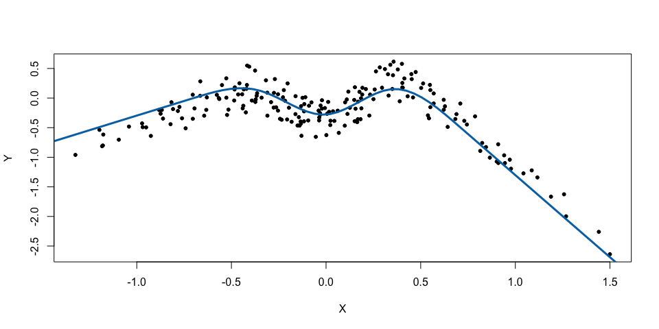
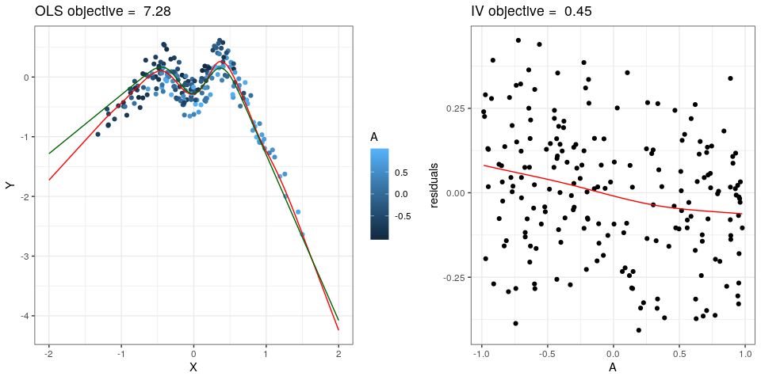

The NILE estimator can be used to estimate a nonlinear causal influence of a single predictor X on a real-valued response Y. It exploits an instrumental variable (IV) setting with a single exogenous variable A which serves as instrument. Predictions obtained from the NILE estimator are causal predictions in the sense that they predict the values of Y under interventions which break the dependence between X and possible confounders of (X, Y). For further details refer to the paper Christiansen et al. (2020 https://arxiv.org/abs/2006.07433).
Installation
You can install the the development version from GitHub with:
# install.packages("devtools") devtools::install_github("runesen/NILE")
Example
This is a basic example which shows the idea behind NILE. Let us start by importing the NILE library.
Suppose that the true (unknown) functional relationship between X and Y is defined by a spline that linearly extrapolates outside the training data.
# true (unknown) functional relationship X -> Y # (linearly extrapolating beyond "extrap") fX <- function(x, extrap, beta){ bx <- splines::ns(x, knots = seq(from=extrap[1], to=extrap[2], length.out=(n.splines.true+1))[ -c(1,n.splines.true+1)], Boundary.knots = extrap) bx%*%beta }
Let us generate the data generating process.
# data generating model n <- 200 n.splines.true <- 4 set.seed(2) beta0 <- runif(n.splines.true, -1,1) alphaA <- alphaEps <- alphaH <- 1/sqrt(3) A <- runif(n,-1,1) H <- runif(n,-1,1) X <- alphaA*A + alphaH*H + alphaEps*runif(n,-1,1) Y <- fX(x=X,extrap=c(-.7,.7), beta=beta0) + .3*H + .2*runif(n,-1,1) x.new <- seq(-2,2,length.out=100) f.new <- fX(x=x.new,extrap=c(-.7,.7), beta=beta0) plot(X,Y, pch=20) lines(x.new,f.new,col="#0072B2",lwd=3)

Given the observed dataset, let us now fit NILE.
fit <- NILE(Y, # response X, # predictors (so far, only 1-dim supported) A, # anchors (1 or 2-dim, although 2-dim is experimental so far) lambda.star = "test", # (0 = OLS, Inf = IV, (0,Inf) = # nonlinear anchor regression, "test" = NILE) test = "tsls.over.ols", intercept = TRUE, df = 50, # number of splines used for X -> Y p.min = 0.05, # level at which test for lambda is performed x.new = x.new, # values at which predictions are required plot=TRUE, # diagnostics plots f.true = function(x) fX(x,c(-.7,.7), beta0), # if supplied, the # true causal function is added to the plot par.x = list(lambda=NULL, # positive smoothness penalty for X -> Y, # if NULL, it is chosen by CV to minimize out-of-sample # AR objective breaks=NULL, # if breaks are supplied, exactly these # will be used for splines basis num.breaks=20, # will result in num.breaks+2 splines, # ignored if breaks is supplied. n.order=4 # order of splines ), par.a = list(lambda=NULL, # positive smoothness penalty for fit of # residuals onto A. If NULL, we first compute the OLS # fit of Y onto X, # and then choose lambdaA by CV to # minimize the out-of-sample MSE for predicting # the OLS residuals breaks=NULL, # same as above num.breaks=4, # same as above n.order=4 # same as above )) #> [1] "lambda.cv.a = 1.42932324587573" #> [1] "lambda.cv.x = 0.0015933292003293" #> [1] "lambda.star.p.uncorr = 1.45538091659546"
